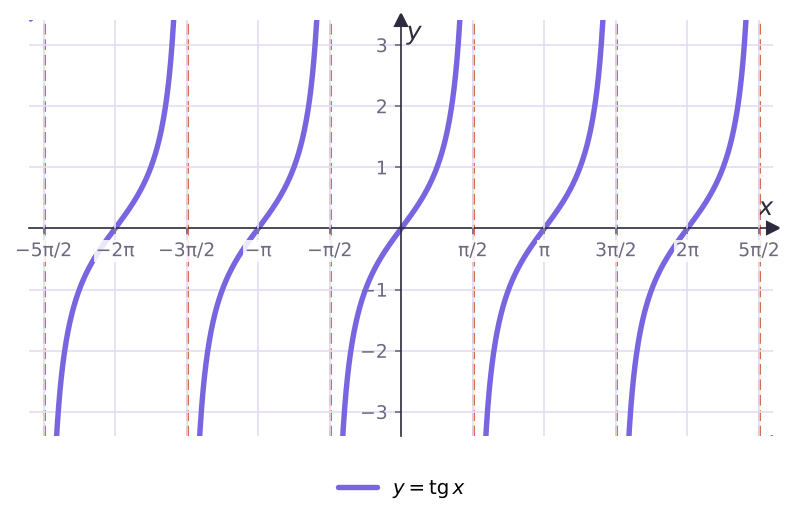
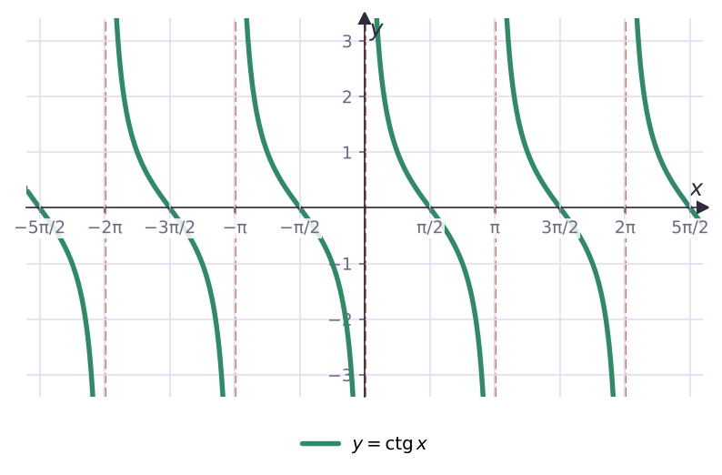
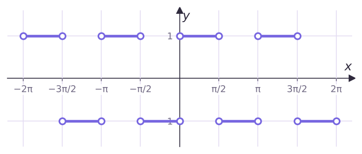

Теория
Действуем по тому же плану, что и для синуса: изучаем функцию на промежутке длиной в период и сдвигаем. Главный период тангенса и котангенса — π.
Функция y = tg x на (−π/2; π/2)
Возьмём интервал (−π/2; π/2) — он длиной π, а на его концах тангенс не определён (там cos x = 0). Вспомни ось тангенсов из § 18: когда угол растёт от −π/2 до π/2, точка пересечения луча OP с прямой x = 1 поднимается снизу вверх и проходит всю прямую.
- тангенс возрастает на (−π/2; π/2);
- принимает все значения: область значений R;
- нуль один: x = 0; при x ∈ (−π/2; 0) tg x < 0, при x ∈ (0; π/2) tg x > 0;
- при приближении x к ±π/2 значения неограниченно растут по модулю: график прижимается к вертикальным прямым x = ±π/2, но не пересекает их.
Такие прямые, к которым график неограниченно приближается, называют асимптотами. Сдвигая построенную ветвь на πn, получаем весь график — тангенсоиду.

Функция y = ctg x на (0; π)
Котангенс не определён там, где sin x = 0, поэтому берём интервал (0; π). При росте угла от 0 до π котангенс убывает, принимает все значения, нуль — x = π/2; ctg x > 0 на (0; π/2) и < 0 на (π/2; π). Асимптоты: x = πn.

| Свойство | y = tg x | y = ctg x |
|---|---|---|
| Область определения | x ≠ π/2 + πn | x ≠ πn |
| Область значений | R | R |
| Главный период | π | π |
| Нули | πn | π/2 + πn |
| > 0 | (πn; π/2 + πn) | (πn; π/2 + πn) |
| < 0 | (−π/2 + πn; πn) | (π/2 + πn; π + πn) |
| Чётность | нечётная | нечётная |
| Монотонность | возрастает на каждом (−π/2 + πn; π/2 + πn) | убывает на каждом (πn; π + πn) |
| Наибольшее/наименьшее | нет | нет |
Тангенс возрастает на каждом интервале, но не на всей области определения: π/4 < 3π/4, а tg π/4 = 1 > tg 3π/4 = −1. Сравнивать по монотонности можно только аргументы из одного интервала (−π/2 + πn; π/2 + πn).
Ограниченные функции
Функцию f называют ограниченной, если существует число M такое, что |f(x)| ≤ M для всех x из области определения.
sin и cos ограничены (|sin x| ≤ 1, |cos x| ≤ 1), а tg и ctg — нет: их значения бывают сколь угодно большими по модулю.
Разбор примеров
Сравни: а) tg 1 и tg 1,5; б) tg 130° и tg 150°; в) ctg 2 и ctg 3; г) tg(−38°) и tg(−42°).
а) −π/2 < 1 < 1,5 < π/2 ≈ 1,57 — один интервал, тангенс возрастает: tg 1 < tg 1,5.
б) 130° и 150° лежат в (90°; 270°) — тоже один интервал: tg 130° < tg 150°.
в) 2 и 3 лежат в (0; π), котангенс убывает: ctg 2 > ctg 3.
г) −42° < −38°, оба в (−90°; 90°): tg(−38°) > tg(−42°).
Найди область определения функции y = tg 2x.
Нужно 2x ≠ π/2 + πn, то есть x ≠ π/4 + πn/2, n ∈ Z. Асимптоты расположены вдвое чаще, а период равен π/2.
Построй график функции y = |ctg x| · tg x.
Область определения: нужны и tg x, и ctg x, то есть x ≠ πn/2. Так как tg x = 1/ctg x, выражение равно |ctg x|/ctg x: это 1, если ctg x > 0, и −1, если ctg x < 0.
ctg x > 0 на (πn; π/2 + πn) и < 0 на (π/2 + πn; π + πn). График — отрезки с выколотыми концами:

Возможно ли равенство sin α = tg 80°?
tg 80° > tg 45° = 1 (тангенс возрастает на (−90°; 90°)), а sin α ≤ 1. Невозможно.
Задачи урока
Реши в тетради. Ответы разберём на занятии.
Из учебника
- № 22.1, 22.2 — Сравнение значений тангенса и котангенса.
- № 22.3, 22.4 — Построение графиков с помощью преобразований.
- № 22.5 — Графики со сдвигами и растяжениями.
- № 22.7 — Возможно ли равенство.
Тест к уроку
Домашнее задание
№ 22.2, 22.4, 22.6 из учебника письменно. Построить тангенсоиду и котангенсоиду на [−π; π] с асимптотами; выписать сводную таблицу свойств tg и ctg.